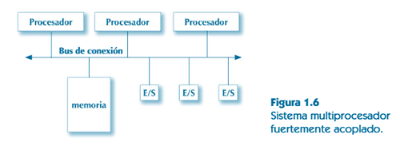
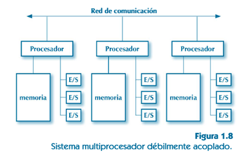
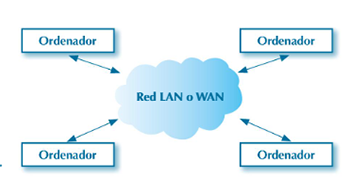

1.3. Procesos y sistemas monoprocesadores y multiprocesadores
Un sistema monoprocesador tiene un único procesador, y un sistema multiprocesador, varios. En ambos tipos de sistemas, se pueden ejecutar varios procesos de manera simultánea. En este apartado se explican las técnicas utilizadas para ejecutar varios procesos concurrentes en ambos tipos de sistemas.
- Se denominan procesos concurrentes a los que se ejecutan simultáneamente durante un intervalo dado de tiempo, ya sea de forma real (en sistemas multiprocesadores) o entrelazada (en sistemas monoprocesadores, o en un mismo procesador de un sistema multiprocesador).
- Se habla de programación concurrente cuando se ejecutan varios procesos concurrentes en un sistema, y también para hacer referencia a las técnicas que permiten desarrollar los programas que utilizan varios procesos concurrentes que funcionan de forma conjunta y coordinada, para realizar una tarea.
Si un programa lanza distintos procesos concurrentes para realizar una tarea, estos deben comunicarse y sincronizarse entre sí. Las técnicas de comunicación y sincronización serán distintas, normalmente, según se trate de sistemas monoprocesadores o multiprocesadores, y según el tipo de sistema multiprocesador.
1.3.1. Sistemas monoprocesadores
La ejecución concurrente de varios procesos en un sistema monoprocesador se conoce con el nombre de multiprogramación. Ya se ha visto que la técnica del cambio de contexto permite una multitarea efectiva y un mejor aprovechamiento del procesador, ya que se asigna a otro proceso durante el tiempo en que un proceso está inactivo, o a la espera de que se termine de realizar una operación de E/S.
1.3.2. Sistemas multiprocesadores
Los sistemas multiprocesadores disponen de más de un procesador. Se pueden clasificar, dependiendo de su arquitectura, en sistemas multiprocesadores fuertemente acoplados y sistemas multiprocesadores débilmente acoplados.
A) Sistemas fuertemente acoplados
En estos sistemas existe una memoria compartida para todos los procesadores, a la que todos ellos acceden a través de un bus de conexión. También acceden al sistema de E/S a través del mismo bus.
Se pueden distinguir dos tipos de sistemas multiprocesadores fuertemente acoplados:
En los que los procesadores del sistema funcionan todos de igual manera, y no hay ninguno diferenciado del resto.
En los que uno de los procesadores del sistema, el maestro o master, controla al resto de los procesadores (slave). Este tipo de sistemas también se denominan master-slave.
B) Sistemas débilmente acoplados
En estos sistemas no hay memoria compartida, sino que cada procesador tiene su propia memoria y su propio sistema de E/S. Existe una red de comunicaciones entre los procesadores.
Una posibilidad es que los procesadores estén físicamente cercanos unos a otros y comunicados mediante una red a medida, de alta velocidad y con una estructura regular. Este tipo de sistemas se utiliza en supercomputación y para aplicaciones de cálculo.
Una alternativa a este tipo de sistemas son los clusters. Tienen también una estructura regular, pero, en lugar de procesadores de alto rendimiento interconectados mediante una red especializada y diseñada a medida, están formados por ordenadores convencionales conectados mediante una red de área local convencional.
Otra posibilidad, muy común hoy en día, es que los procesadores estén en ordenadores independientes comunicados mediante una red de área local (LAN) o incluso de área amplia (WAN) o a través de internet. Estos son los sistemas distribuidos. Se caracterizan por la heterogeneidad del hardware sobre el que están construidos y por la relativa independencia entre los sistemas que los constituyen.
Las principales ventajas de los sistemas distribuidos es que son altamente escalables y configurables. Sus principales inconvenientes es que son sistemas heterogéneos y complejos de manejar. La sincronización entre procesos puede ser complicada también. La comunicación entre procesos se realiza a través de la red, que tiene una velocidad limitada, por lo que puede convertirse en un cuello de botella.